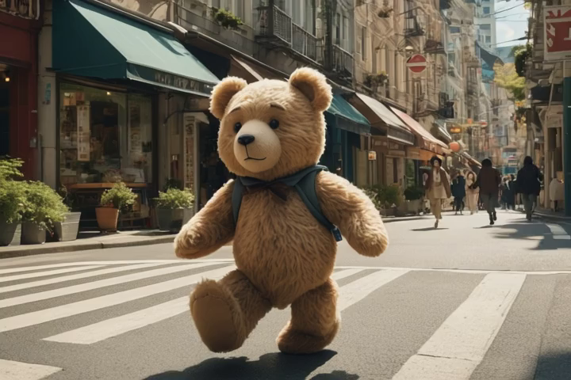

Abstract
This paper addresses a challenging question: How can we efficiently create high-quality, wide-scope 3D scenes from a single arbitrary image? Existing methods face several constraints, such as requiring multi-view data, time-consuming per-scene optimization, low visual quality in backgrounds, and distorted reconstructions in unseen areas. We propose a novel pipeline to overcome these limitations. Specifically, we introduce a large-scale reconstruction model that uses latents from a video diffusion model to predict 3D Gaussian Splattings for the scenes in a feed-forward manner. The video diffusion model is designed to create videos precisely following specified camera trajectories, allowing it to generate compressed video latents that contain multi-view information while maintaining 3D consistency. We train the 3D reconstruction model to operate on the video latent space with a progressive training strategy, enabling the efficient generation of high-quality, wide-scope, and generic 3D scenes. Extensive evaluations across various datasets demonstrate that our model significantly outperforms existing methods for single-view 3D scene generation, particularly with out-of-domain images. For the first time, we demonstrate that a 3D reconstruction model can be effectively built upon the latent space of a diffusion model to realize efficient 3D scene generation.